Creación de esquemas de metadatos — Una guía para data stewards
Contour te permite diseñar esquemas de metadatos personalizados de forma visual —arrastrando o haciendo clic en widgets de formulario sobre un lienzo— y los exporta como formas SHACL conformes con los estándares, con anotaciones de formulario DASH. El resultado encaja directamente en un FAIR Data Point o en cualquier plataforma compatible con SHACL.
Eslogan de Contour: Visual schemas. Clean SHACL.
Esta guía está pensada para data stewards que quieran definir qué metadatos debe (o puede) aportar su comunidad para un tipo determinado de recurso —un conjunto de datos, un estudio, una muestra, un paquete de software— sin escribir Turtle a mano.
Sin instalación, sin servidor. El editor es una única página web autocontenida. Ábrela en Chrome o Edge (recomendado, para guardar archivos directamente) — Firefox y Safari también funcionan, con un guardado en forma de descarga.
Índice
- Qué estás creando (conceptos clave)
- La interfaz de un vistazo
- Tutorial: crear un esquema Dataset desde cero
- Paso 1 — Definir la identidad del esquema
- Paso 2 — Gestionar vocabularios (prefijos)
- Paso 3 — Organizar el formulario en grupos
- Paso 4 — Añadir tu primera propiedad (un campo de texto)
- Paso 5 — Establecer la cardinalidad y las restricciones de validación
- Paso 6 — Añadir una descripción de varias líneas
- Paso 7 — Añadir una propiedad de fecha
- Paso 8 — Añadir un vocabulario controlado (enumeración)
- Paso 9 — Referenciar otra entidad (IRI + clase)
- Paso 10 — Modelar un subobjeto con una forma anidada
- Paso 11 — Previsualizar el formulario de entrada de datos
- Paso 12 — Revisar el SHACL generado
- Paso 13 — Guardar y exportar
- Trabajar directamente con el código (la pestaña Código SHACL)
- Comprobar tu trabajo (el panel de Problemas)
- Funciones avanzadas (modelado avanzado)
- Referencia
- Recetas — patrones de modelado habituales
- Consejos y resolución de problemas
1. Qué estás creando (conceptos clave)
Un esquema de metadatos en esta herramienta es una NodeShape SHACL: la descripción de cómo es un registro válido de un tipo determinado. Algunos términos que encontrarás a lo largo de la guía:
| Término | Qué significa para ti |
|---|---|
| NodeShape | El esquema en sí — p. ej., "qué debe contener un registro de Dataset". |
Clase objetivo (sh:targetClass) |
El tipo RDF al que se aplica el esquema, p. ej., dcat:Dataset. Los registros de este tipo se validan frente a tu esquema. |
Propiedad (sh:property) |
Un único campo — título, editor, fecha de emisión… Cada propiedad tiene una ruta, un widget y restricciones. |
Ruta de propiedad (sh:path) |
El predicado RDF en el que escribe el campo, p. ej., dct:title. Es el término que realmente se almacena en los metadatos. |
Widget (dash:editor) |
El control de formulario que se muestra a quien rellena los metadatos — una caja de texto, un selector de fecha, una lista desplegable, etc. |
Grupo (sh:PropertyGroup) |
Una sección visual que agrupa campos relacionados, p. ej., "Información general". |
Prefijo (@prefix) |
Un alias corto para un espacio de nombres de vocabulario, p. ej., dct: → http://purl.org/dc/terms/. |
Tú lo diseñas todo de forma visual; la herramienta escribe el SHACL por ti.
2. La interfaz de un vistazo
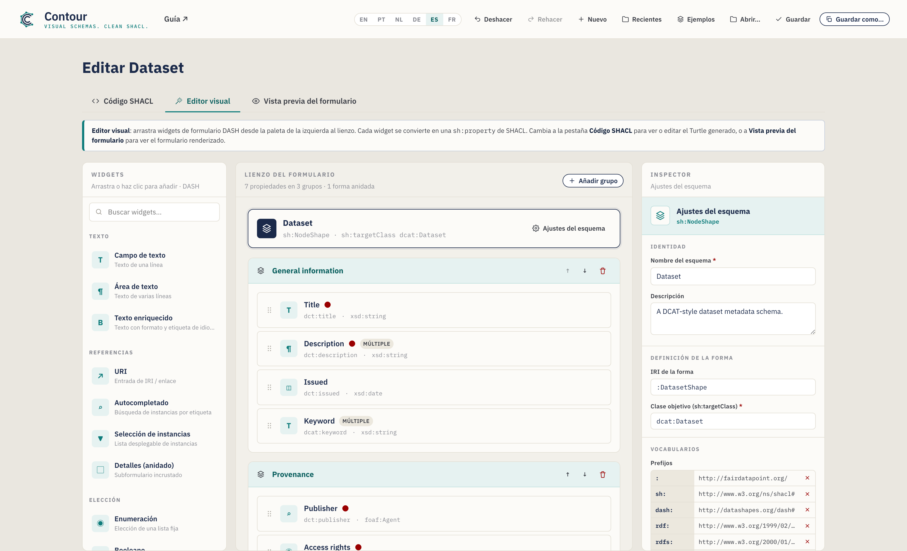
La ventana tiene tres pestañas:
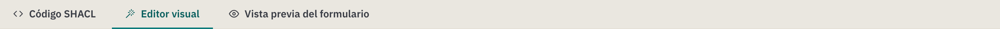
- Código SHACL — el esquema serializado. Turtle por defecto, con autocompletado; las ediciones se sincronizan de vuelta con el lienzo visual. Un selector de sintaxis ofrece además N-Triples, TriG, Notation3 y una exportación a JSON-LD. Es también donde se muestran los archivos que abres.
- Editor visual — el banco de trabajo de arrastrar y soltar (mostrado arriba). Es donde transcurre la mayor parte del trabajo.
- Vista previa del formulario — una representación realista del formulario de entrada de datos que produce tu esquema, para que pruebes la experiencia antes de publicar.
El Editor visual se divide en tres columnas:
| Columna | Función |
|---|---|
| Widgets (izquierda) | La paleta de controles de formulario. Arrastra uno hasta el lienzo, o simplemente haz clic en él (con teclado: foco + Enter) para añadirlo. |
| Lienzo del formulario (centro) | Tu esquema: el banner del objetivo, los grupos, las propiedades y las formas anidadas. |
| Inspector (derecha) | Los ajustes de lo que esté seleccionado en cada momento — el esquema, un grupo o una propiedad. |
Bajo el banco de trabajo hay una barra de acciones con un contador de propiedades/grupos, un indicador de Problemas (una comprobación en vivo de tu esquema — véase la §5) y botones de Guardar / Copiar. Para ver el esquema serializado, cambia a la pestaña Código SHACL; para ver el formulario representado, cambia a Vista previa del formulario.
La cabecera concentra las acciones de archivo — Deshacer / Rehacer, Nuevo, Recientes, Ejemplos, Abrir, Guardar, Guardar como — además del conmutador de idioma y un enlace a la Guía:
Tu trabajo se guarda sobre la marcha. Contour mantiene un borrador autoguardado en tu navegador, de modo que recargar la página o cerrar la pestaña por accidente no lo pierde — al volver verás un aviso de "Se ha restaurado tu borrador no guardado". Deshacer/Rehacer (o Ctrl/Cmd+Z y Ctrl/Cmd+Mayús+Z) recorren tus ediciones, y el menú Recientes vuelve a abrir esquemas que hayas guardado.
Idioma de la interfaz
La interfaz de Contour está disponible en inglés (por defecto), portugués de Brasil, neerlandés, alemán, español y francés. Cámbiala con el selector de idioma (EN / PT / NL / DE / ES / FR) de la cabecera — tu elección se recuerda entre sesiones. Si el idioma preferido de tu navegador es uno de estos, Contour se abre en él automáticamente; de lo contrario, recurre al inglés. Solo se traduce la interfaz; el contenido de tu esquema (nombres, descripciones, rutas de propiedad) y el SHACL generado no se alteran nunca, por lo que el Turtle exportado es idéntico en cualquier idioma.
3. Tutorial: crear un esquema Dataset desde cero
Vamos a crear un esquema de metadatos de Dataset al estilo DCAT. Cada paso introduce una función de la herramienta y, al terminar, habrás tocado todas las capacidades principales.
Contour empieza en blanco para que crees tu propio esquema desde cero — el título de la página muestra Nuevo esquema de metadatos hasta que le pongas nombre. Si prefieres explorar un esquema ya terminado, el menú Ejemplos de la cabecera carga plantillas listas para usar (Dataset, Agente, Concepto); el ejemplo Dataset coincide con el que construimos a continuación:
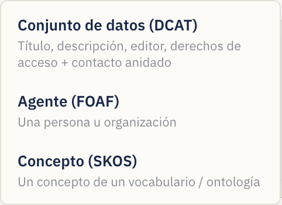
A lo largo del tutorial, cambia a la pestaña Editor visual para trabajar. Para empezar un esquema nuevo en cualquier momento, usa el botón Nuevo.
Paso 1 — Definir la identidad del esquema
Haz clic en el banner del esquema situado en la parte superior del lienzo (muestra Esquema sin título hasta que le pongas nombre), o en el botón Ajustes del esquema. El Inspector pasa a mostrar los ajustes a nivel de esquema:
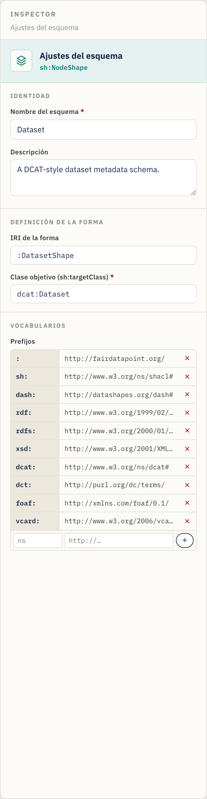
Rellena:
- Nombre del esquema — una etiqueta legible, p. ej.,
Dataset. (Una vez definido, el título de la página cambia de Nuevo esquema de metadatos a Editar Dataset; nómbralo para cualquier dominio —una clase de ontología, un catálogo— y el título lo acompaña.) - Descripción — una frase que describa la finalidad del esquema.
- IRI de la forma — el identificador de la forma, p. ej.,
:DatasetShape. El:inicial usa tu espacio de nombres por defecto; puedes mantener el valor sugerido. - Clase objetivo (
sh:targetClass) — la clase RDF que este esquema valida, p. ej.,dcat:Dataset. Es obligatoria para que el esquema resulte útil — es lo que le dice a una plataforma "aplica estas reglas a los registros de Dataset".
Paso 2 — Gestionar vocabularios (prefijos)
Sin salir de los ajustes del esquema, desplázate hasta Vocabularios. Los
prefijos te permiten escribir términos cortos como dct:title en lugar de URL
completas.
El editor ya viene con los más comunes declarados — sh, dash, rdf, rdfs,
xsd, dcat, dct, foaf y el prefijo vacío por defecto :. Para añadir el
tuyo (por ejemplo, un vocabulario de dominio):
- En la fila vacía al final de la tabla de prefijos, escribe el alias (p.
ej.,
vcard) en la primera caja. - Escribe la URL del espacio de nombres (p. ej.,
http://www.w3.org/2006/vcard/ns#) en la segunda caja. - Pulsa Enter o haz clic en el botón +.
Elimina un prefijo con la × que tiene al lado. Todo prefijo que uses en una ruta de propiedad o en una clase debe declararse aquí para que el Turtle exportado sea válido.
Paso 3 — Organizar el formulario en grupos
Los grupos (sh:PropertyGroup) son las secciones de tu formulario. En un lienzo
en blanco, basta con que arrastres tu primer widget al lienzo y Contour crea
el primer grupo por ti — o haz clic en Añadir grupo (esquina superior derecha
del lienzo) para crear una sección vacía donde soltar widgets:
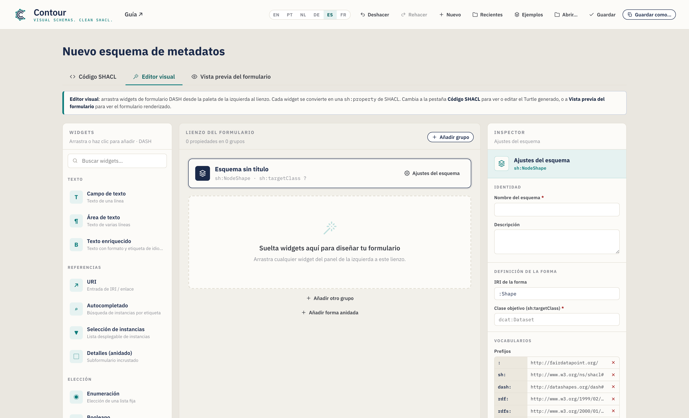
- Renombra un grupo haciendo clic en su título y escribiendo — p. ej.,
Información general. - Reordena con los botones ↑ / ↓ de la cabecera del grupo (esto renumera los grupos por ti).
- Elimina con el icono de papelera de la cabecera del grupo.
Para este tutorial, crea dos grupos: General information y Provenance.
Paso 4 — Añadir tu primera propiedad (un campo de texto)
Desde la paleta de Widgets de la izquierda, añade un Campo de texto al grupo General information — arrástralo hasta el grupo o, simplemente, haz clic en él (se añade al grupo seleccionado, o al último). Quien use teclado puede dar foco a un widget y pulsar Enter. Los widgets están organizados por categoría (Texto, Referencias, Elección, Fecha y número) y se pueden buscar con la caja de la parte superior.
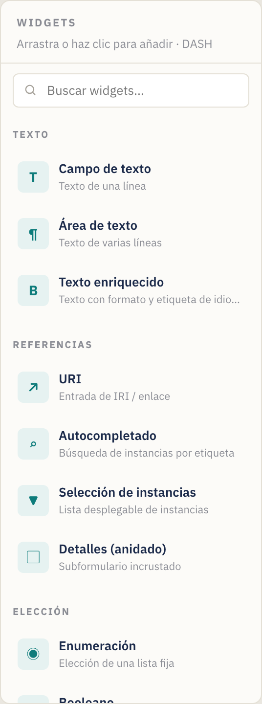
Al añadir un widget, este se convierte en una tarjeta de propiedad en el lienzo y queda seleccionado automáticamente. Una tarjeta de propiedad muestra su etiqueta, su ruta, su tipo y unas insignias de estado (un punto rojo para obligatorio, una insignia "múltiple" para repetible):

Cada tarjeta tiene tiradores para reordenar arrastrando (el asa de la izquierda), duplicar y eliminar (los iconos de la derecha, al pasar el ratón).
Con el nuevo campo seleccionado, el Inspector muestra sus Ajustes de propiedad. Establece:
- Etiqueta (
sh:name) →Title— la etiqueta del campo que se muestra a los usuarios. - Descripción → texto de ayuda opcional (aparece como una sugerencia ⓘ en el formulario).
- Ruta de propiedad (
sh:path) →dct:title— el término RDF en el que escribe este campo. Defínelo siempre; la ruta de marcador de posición por defecto no tiene sentido. A medida que escribes, Contour sugiere predicados comunes (y los prefijos que hayas declarado); elige uno o sigue escribiendo el tuyo.
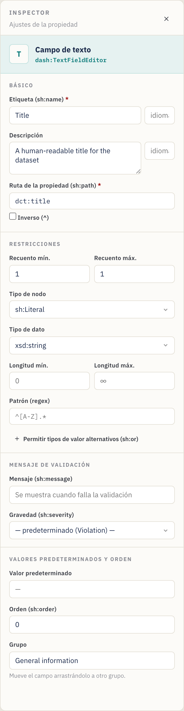
Paso 5 — Establecer la cardinalidad y las restricciones de validación
La sección Restricciones del Inspector controla la validación. Para Title:
- Recuento mín. =
1, Recuento máx. =1→ se exige exactamente un título. (Un recuento mín. ≥ 1 hace que el campo sea obligatorio — fíjate en el punto rojo de la tarjeta y en el asterisco rojo de la vista previa del formulario.) - Tipo de nodo =
sh:Literal(un valor simple en lugar de un enlace). - Tipo de dato =
xsd:string. - Opcionalmente, Longitud mín./máx. y un Patrón (una expresión regular,
p. ej.,
^[A-Z].*para exigir una mayúscula inicial).
Chuleta de cardinalidad: Mín 1 / Máx 1 = obligatorio, valor único. Mín 0 / Máx 1 = opcional, valor único. Mín 1 / Máx ∞ (deja Máx vacío) = obligatorio, repetible. Mín 0 / Máx ∞ = opcional, repetible.
Rango de valores (números y fechas). Los campos de Número, Fecha y Fecha y
hora muestran una sección Rango de valores — establece Mín (≥) / Máx
(≤) (inclusivos) o los límites exclusivos (>) / (<). Los números se
escriben tal cual (sh:minInclusive 1900), y las fechas como literales tipados
("2020-01-01"^^xsd:date).
Mensaje de validación personalizado (opcional). La sección Mensaje de
validación permite definir el texto que muestra una plataforma cuando este
campo falla (sh:message) y su Gravedad — Violation (por defecto),
Warning o Info (sh:severity).
Paso 6 — Añadir una descripción de varias líneas
Arrastra un Área de texto a General information. Establece:
- Etiqueta →
Description, Ruta →dct:description. - Recuento mín. =
1, deja Recuento máx. vacío (∞) para que se puedan aportar varias variantes de idioma. La tarjeta muestra ahora una insignia múltiple, y la vista previa del formulario gana un botón + Añadir.
Paso 7 — Añadir una propiedad de fecha
Arrastra un Selector de fecha a General information. Establece:
- Etiqueta →
Issued, Ruta →dct:issued. - Recuento mín. =
0, Recuento máx. =1(opcional, único). - El tipo de dato adopta por defecto
xsd:date, lo correcto para una fecha de calendario. (Usa Fecha y hora en su lugar si necesitas una marca de tiempo —xsd:dateTime.)
Paso 8 — Añadir un vocabulario controlado (enumeración)
Cambia al grupo Provenance y arrastra un widget de Enumeración. Crea una
lista desplegable restringida a un conjunto fijo de valores (sh:in).
En el Inspector aparece un editor de Valores permitidos:
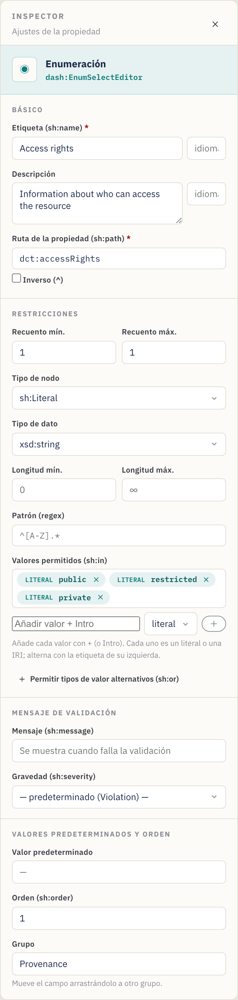
- Etiqueta →
Access rights, Ruta →dct:accessRights. - En Valores permitidos, escribe cada opción y pulsa Enter:
public,restricted,private. Elimina una con su ×. - Recuento mín./máx.
1/1para exigir exactamente una elección.
Los valores se exportan como sh:in ( "public" "restricted" "private" ).
Valores literales vs. IRI. Cada valor permitido lleva un conmutador literal / IRI (la pequeña etiqueta a su izquierda). Mantenlo en literal para texto simple como
public; cámbialo a IRI cuando las opciones sean términos de un vocabulario controlado (p. ej.,ex:Public, unskos:Concept) para que se exporten como IRI y no como cadenas.
Paso 9 — Referenciar otra entidad (IRI + clase)
Algunas propiedades apuntan a otro recurso en lugar de contener un valor simple — por ejemplo, el editor del conjunto de datos es una organización, no una cadena. Arrastra un widget de Autocompletar a Provenance. Representa una caja de búsqueda que localiza instancias existentes.
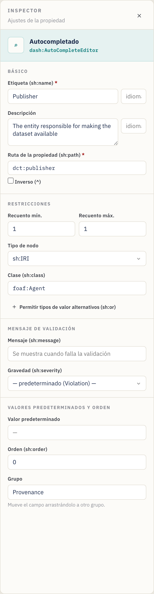
- Etiqueta →
Publisher, Ruta →dct:publisher. - Tipo de nodo =
sh:IRI(el valor es un enlace/identificador). - Clase (
sh:class) →foaf:Agent— restringe el selector a instancias de esa clase. (La caja Clase solo aparece cuando el tipo de nodo está basado en IRI.) - Recuento mín./máx.
1/1.
Otros widgets de referencia: URI (enlace libre), Selección de instancias (lista desplegable de instancias). Usa el que mejor se ajuste a cómo se elige el valor. La caja Clase sugiere clases comunes a medida que escribes.
Avanzado: una propiedad también puede aceptar o bien un literal o bien un IRI (y reglas similares de "uno de estos tipos") mediante Tipos de valor alternativos (
sh:or), o seguir una relación hacia atrás con una ruta Inversa (^) — véase la §6 Funciones avanzadas.
Paso 10 — Modelar un subobjeto con una forma anidada
A veces un campo es, en sí mismo, un pequeño objeto estructurado. Un punto de contacto, por ejemplo, tiene su propio nombre y correo electrónico. Modela esto con una forma anidada y el widget Detalles (anidado).
- En la parte inferior del lienzo, haz clic en Añadir forma anidada. Aparece
una nueva forma bajo el divisor Formas anidadas y queda seleccionada. En el
Inspector, establece su IRI de la forma (p. ej.,
:ContactShape) y, opcionalmente, una Clase objetivo (p. ej.,vcard:Kind). Renombrar la IRI actualiza automáticamente todas las propiedades que la referencian. - Arrastra widgets a la forma anidada igual que a un grupo — p. ej., un
Campo de texto
Full name(vcard:fn) y una URIEmail(vcard:hasEmail). - De vuelta en un grupo, añade un widget Detalles (anidado). En su
Inspector, establece Forma anidada (
sh:node) como:ContactShape(la caja ofrece tus formas anidadas como sugerencias).
Atajo. En una propiedad Detalles puedes hacer clic en Crear y vincular forma anidada para acuñar una nueva forma y conectarle
sh:nodeen un solo paso — luego solo tienes que añadir sus campos. La tarjeta de la propiedad muestra el enlace al que apunta (p. ej.,→ :ContactShape), y el panel de Problemas señala una propiedad Detalles cuyo objetivo falta.
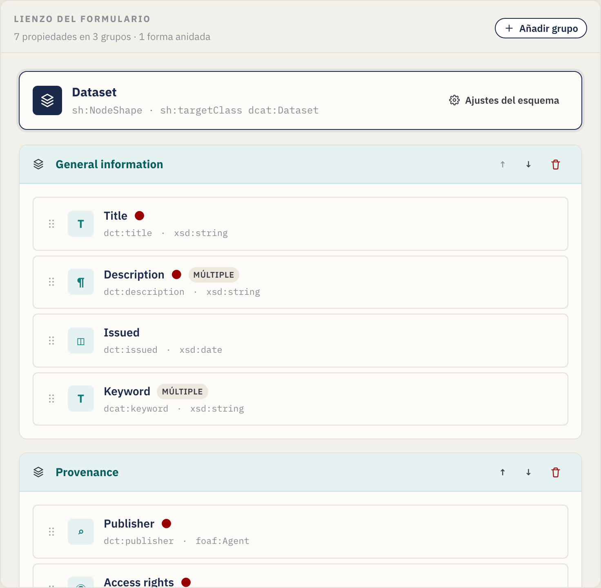
El Inspector de la propiedad Detalles la vincula a la forma anidada mediante
sh:node:
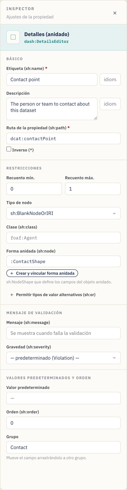
La tarjeta de la forma anidada en el lienzo contiene sus propias propiedades:
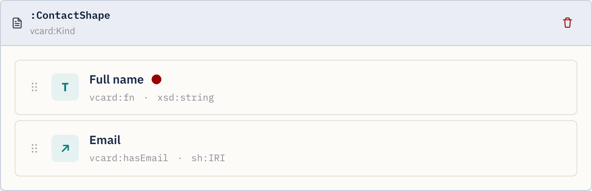
Paso 11 — Previsualizar el formulario de entrada de datos
En cualquier momento, abre la pestaña Vista previa del formulario para
comprobar qué verá quien introduzca los metadatos. La vista previa refleja tus
restricciones: los campos obligatorios muestran un asterisco rojo, una pequeña
ficha de cardinalidad indica el recuento permitido (p. ej., 1–3), las
descripciones se convierten en sugerencias ⓘ, los campos repetibles obtienen
botones + Añadir, los patrones / longitudes / rangos se aplican a las
entradas, el texto con etiqueta de idioma obtiene una pequeña caja de idioma,
cualquier mensaje de validación aparece bajo el campo, y las propiedades
Detalles representan los campos de su forma anidada en línea — anidando a
cualquier profundidad:
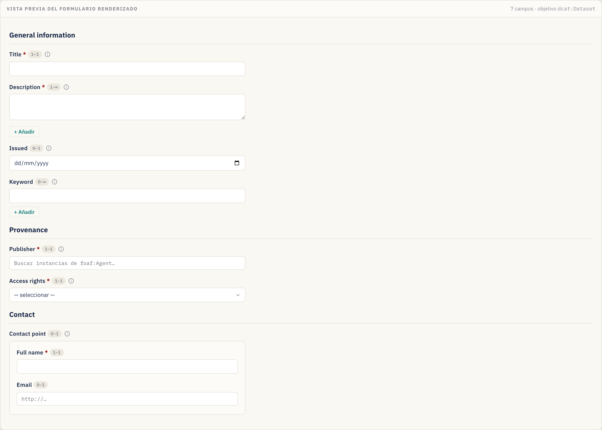
Esta vista previa es de solo lectura — está para validar el diseño, no para capturar datos reales.
Paso 12 — Revisar el SHACL generado
La pestaña Código SHACL muestra el Turtle generado a partir de tu diseño (y permite editarlo directamente):
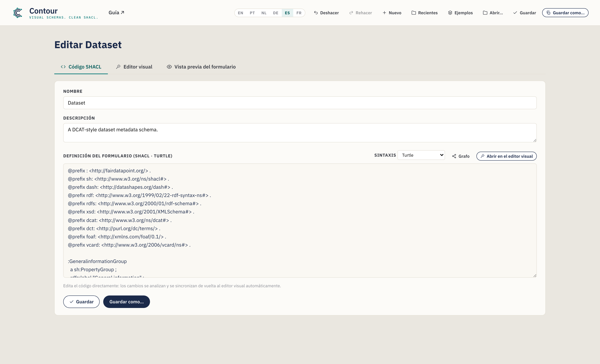
Todo lo que configuraste de forma visual está aquí — las declaraciones
@prefix, los PropertyGroup, la NodeShape con sus bloques sh:property y
cualquier forma anidada. El botón Copiar SHACL de la barra de acciones del
Editor visual coloca la serialización en tu portapapeles. Usa el selector de
sintaxis para ver o exportar otros formatos, incluido JSON-LD (véase la
§4).
Paso 13 — Guardar y exportar
Guarda tu esquema (un archivo .ttl por defecto):
- Guardar como… — elige un nuevo nombre y ubicación de archivo. La extensión
sigue la sintaxis seleccionada (
.ttl,.nt,.trig,.n3o.jsonld). - Guardar — escribe en el archivo que abriste o guardaste por última vez (Ctrl/Cmd+S). El botón muestra brevemente ¡Guardado! para confirmarlo.
- Copiar SHACL — copia la serialización actual sin guardar ningún archivo.
- Recientes (cabecera) — vuelve a abrir un esquema que guardaras antes en esta sesión.
En Chrome/Edge el archivo se escribe directamente en el disco. En Firefox/Safari el editor recurre a una descarga normal. El nombre de archivo sugerido se deriva del nombre del esquema (p. ej.,
dataset.ttl). En cualquier caso, se mantiene un borrador autoguardado en tu navegador entre sesiones.
Sube el .ttl resultante a tu FAIR Data Point (u otra plataforma SHACL) como un
esquema de metadatos, y los registros de la clase objetivo se validarán —y los
formularios se representarán— conforme a tu diseño.
4. Trabajar directamente con el código (la pestaña Código SHACL)
¿Prefieres escribir o pegar SHACL a mano, o necesitas partir de una forma existente? Usa la pestaña Código SHACL.
- Sincronización bidireccional. Las ediciones en el Turtle se analizan y se envían de vuelta al Editor visual automáticamente (en cuanto dejas de escribir). A la inversa, todo lo que construyas visualmente aparece aquí.
- Autocompletado sensible al contexto (Turtle). A medida que escribes, el
editor sugiere predicados SHACL, tipos de nodo, tipos de dato XSD, editores
DASH, grupos de propiedad declarados y líneas
@prefix. Usa ↑/↓ para desplazarte, Tab/Enter para aceptar y Esc para descartar.
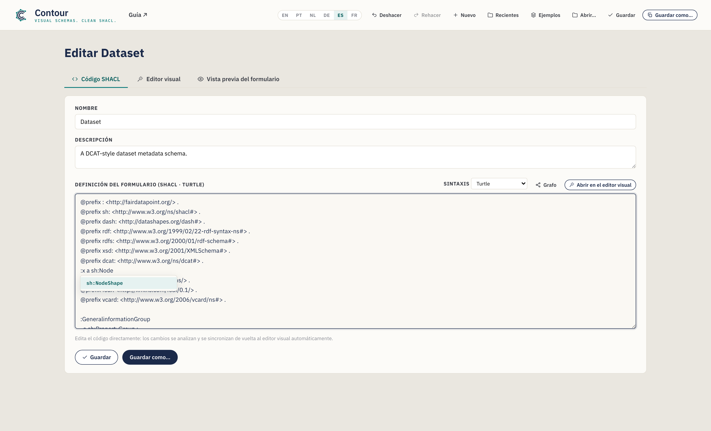
- Abrir un archivo existente. Abrir… en la cabecera carga un archivo
.ttl/.nt/.trig/.n3en esta pestaña, detecta su sintaxis y lo analiza en el Editor visual — una forma rápida de adaptar un esquema existente. Si un archivo no se puede analizar, un mensaje en línea apunta a la línea problemática; aun así, puedes editar el texto en bruto. - Nombre y Descripción del esquema también tienen campos sencillos en la parte superior de esta pestaña.
Haz clic en Abrir en el Editor visual para volver a la vista de arrastrar y soltar.
Elegir una sintaxis (y exportar JSON-LD)
Un selector de sintaxis en esta pestaña cambia la serialización entre
Turtle (por defecto), N-Triples, TriG, Notation3 y JSON-LD
(exportación). Las cuatro primeras son totalmente editables — las ediciones se
sincronizan de vuelta. El JSON-LD es solo de exportación (no hay analizador
de JSON-LD): el editor lo muestra en solo lectura para que puedas Copiarlo o
hacer Guardar como un archivo .jsonld, y luego volver a Turtle para seguir
editando.
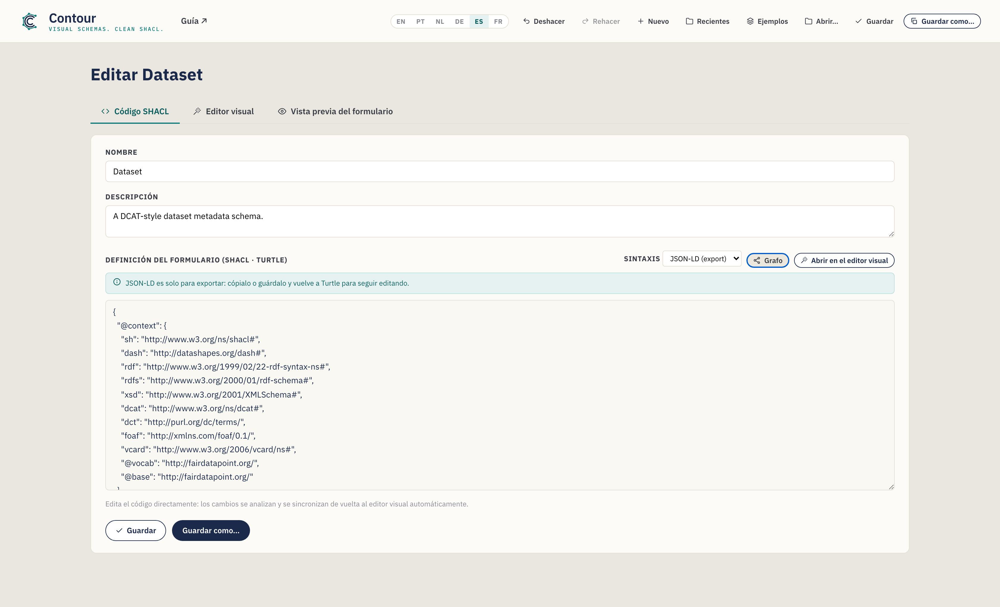
Los esquemas nuevos siempre empiezan en Turtle, y Guardar como usa la extensión que corresponde a la sintaxis seleccionada.
Editar un esquema existente es sin pérdidas
Contour analiza los archivos con un motor RDF de verdad, así que abrir, editar y
guardar un esquema nunca descarta de forma silenciosa las partes que no modela
visualmente. Las construcciones para las que el editor no tiene un control —
digamos sh:and, formas de valor cualificadas o anotaciones adicionales— se
conservan literalmente y se vuelven a emitir en un bloque "Preserved"
claramente comentado al final de la salida. Cuando un archivo cargado contiene
estas construcciones verás un breve aviso en esta pestaña; tus ediciones a las
partes que Contour sí modela se aplican con normalidad, y el resto hace el viaje
de ida y vuelta intacto.
Visualizar el grafo
Haz clic en Grafo en esta pestaña para abrir una visualización de nodos y
enlaces del RDF del esquema en una superposición — formas, nodos de propiedad,
clases y literales, unidos por sus predicados. Desplázate para hacer zoom,
arrastra el fondo para desplazarte y arrastra un nodo para reubicarlo. Dos
conmutadores reducen el detalle (ambos activados por defecto): Plegar listas
contrae una lista sh:in/sh:or en una sola ficha, y Ocultar anotaciones
elimina las etiquetas y sugerencias de formulario (sh:name, dash:editor,
sh:order…) para que la estructura resalte. Es una forma rápida de ver el grafo
de formas (y cualquier forma anidada o construcción conservada) de un vistazo.
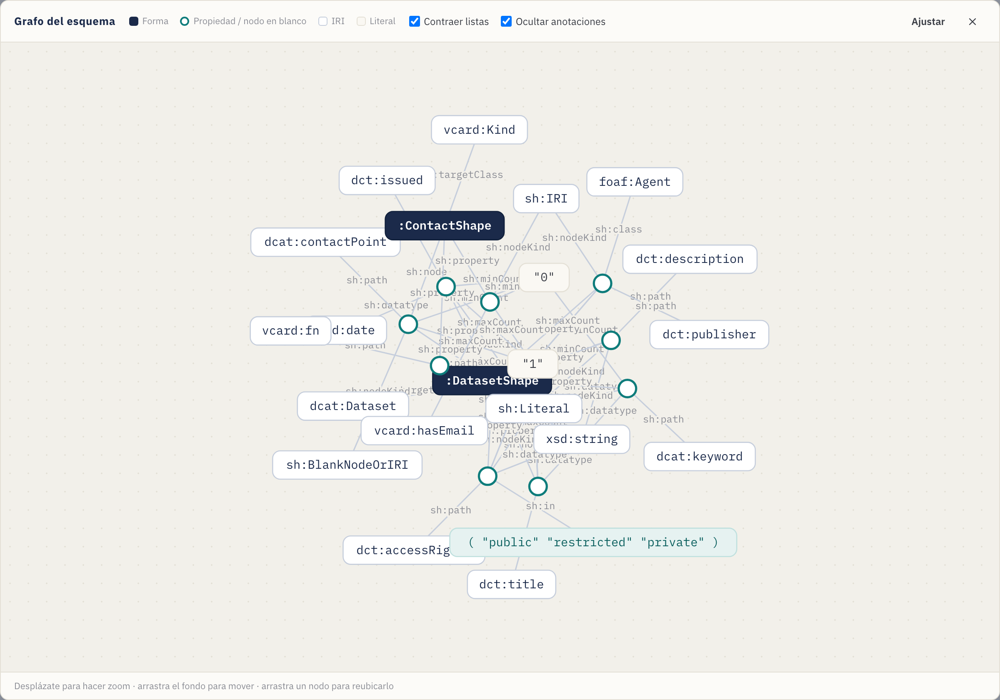
5. Comprobar tu trabajo (el panel de Problemas)
A medida que construyes, Contour comprueba el esquema de forma continua y resume los problemas en el indicador de Problemas de la barra de acciones del Editor visual. Haz clic en él para desplegar la lista; haz clic en cualquier elemento para ir directamente al elemento problemático.

Señala cosas como:
- una propiedad sin ruta, o rutas duplicadas en el mismo grupo;
- una propiedad Detalles cuya forma anidada falta;
- una ruta, clase, tipo de dato o clase objetivo que usa un prefijo que no has declarado;
- una clase objetivo o un nombre de esquema que falta;
- formas anidadas con una IRI ausente o duplicada.
Los problemas son no bloqueantes — son orientación, no barreras — pero resolverlos significa que el SHACL exportado está bien formado y solo referencia vocabularios declarados.
6. Funciones avanzadas (modelado avanzado)
Más allá de los widgets y restricciones básicos, el Inspector expone algunos controles avanzados para esquemas más ricos. Cada uno es opcional — recurre a ellos cuando tu modelo los necesite.
Etiquetas en varios idiomas
sh:name y sh:description pueden llevar una etiqueta de idioma, y puedes
añadir traducciones para que un campo quede etiquetado en varios idiomas. En
la sección Básico, escribe una etiqueta (p. ej., en) en la caja pequeña
que hay junto a la etiqueta; un editor de traducciones te permite entonces
añadir más (pt → "Título"…). Cada una se convierte en su propia sentencia con
etiqueta de idioma (sh:name "Title"@en, "Título"@pt), y la vista previa del
formulario muestra una caja de idioma en el campo.
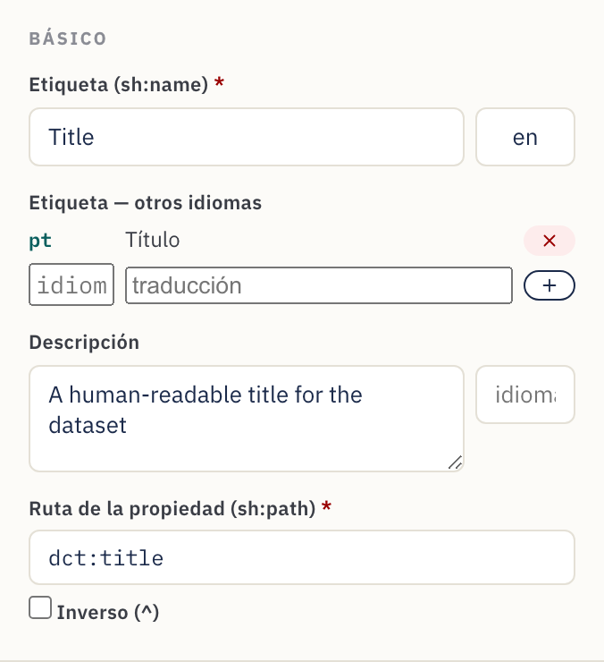
Rangos numéricos y de fecha
Los campos de Número, Fecha y Fecha y hora muestran un bloque Rango de
valores en Restricciones. Establece Mín (≥) / Máx (≤) inclusivos o
los límites exclusivos (>) / (<) — p. ej., un año de publicación ≥ 1900.
Los números se exportan tal cual (sh:minInclusive 1900); las fechas, como
literales tipados ("2000-01-01"^^xsd:date).
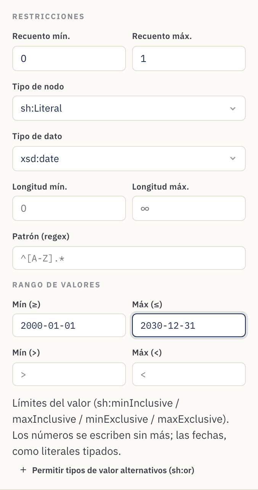
Mensajes de validación personalizados
La sección Mensaje de validación establece el texto que muestra una
plataforma cuando un valor incumple la regla (sh:message) y su Gravedad —
Violation (por defecto), Warning o Info (sh:severity). Úsala para
convertir un fallo escueto en orientación amable para el data steward.
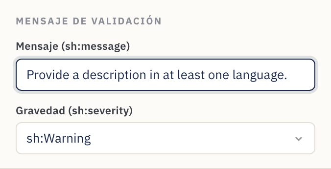
Tipos de valor alternativos (literal o IRI)
Algunas propiedades aceptan legítimamente más de un tipo de valor — un tema que
puede ser texto libre o un IRI de vocabulario controlado, por ejemplo. Haz clic
en Permitir tipos de valor alternativos (sh:or) y enumera las ramas (cada
una un tipo de nodo, un tipo de dato o una clase). Se exporta como sh:or ( [ … ] [ … ] ). Las formas lógicas más ricas que Contour no modela se conservan igual
en el viaje de ida y vuelta (véase la
§4).
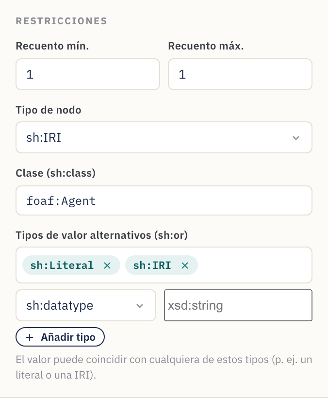
Rutas inversas
Marca Inversa (^) junto a la ruta de propiedad para emparejar una relación
hacia atrás — "los recursos que apuntan a este" en lugar de al revés. Se
exporta como sh:path [ sh:inversePath … ], y la tarjeta de la propiedad muestra
la ruta con un ^ por delante.
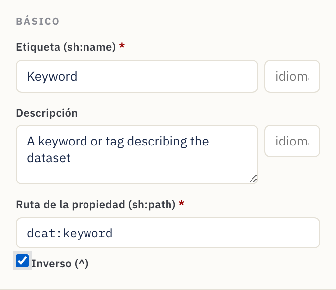
7. Referencia
Catálogo de widgets
Cada widget se asigna a un editor DASH y a un tipo de nodo / tipo de dato por defecto sensatos.
| Widget | Editor DASH | Uso típico | Valores predeterminados |
|---|---|---|---|
| Campo de texto | dash:TextFieldEditor |
Texto de una línea | sh:Literal, xsd:string |
| Área de texto | dash:TextAreaEditor |
Texto de varias líneas | sh:Literal, xsd:string |
| Texto enriquecido | dash:RichTextEditor |
Texto con formato y etiqueta de idioma | sh:Literal, rdf:HTML |
| URI | dash:URIEditor |
Enlace / IRI libre | sh:IRI |
| Autocompletar | dash:AutoCompleteEditor |
Buscar una instancia por su etiqueta | sh:IRI, sh:class foaf:Agent |
| Selección de instancias | dash:InstancesSelectEditor |
Lista desplegable de instancias | sh:IRI |
| Detalles (anidado) | dash:DetailsEditor |
Subformulario incrustado mediante una forma anidada | sh:BlankNodeOrIRI |
| Enumeración | dash:EnumSelectEditor |
Elección de una lista fija sh:in |
sh:Literal, xsd:string |
| Booleano | dash:BooleanSelectEditor |
verdadero / falso | sh:Literal, xsd:boolean |
| Selector de fecha | dash:DatePickerEditor |
Fecha de calendario | sh:Literal, xsd:date |
| Fecha y hora | dash:DateTimePickerEditor |
Marca de tiempo | sh:Literal, xsd:dateTime |
| Número | dash:NumberFieldEditor |
Valor numérico | sh:Literal, xsd:integer |
Los valores predeterminados son puntos de partida — sobrescribe el tipo de nodo, el tipo de dato o la clase en el Inspector siempre que tu modelo necesite algo distinto.
Referencia de los ajustes de propiedad
Lo que cada control del Inspector escribe en el SHACL:
| Campo del Inspector | Salida SHACL | Notas |
|---|---|---|
| Etiqueta | sh:name |
La etiqueta del formulario. Una etiqueta de idioma opcional + traducciones adicionales emiten un sh:name por idioma. |
| Descripción | sh:description |
Texto de ayuda / sugerencia ⓘ. También admite etiqueta de idioma, con traducciones. |
| Ruta de propiedad | sh:path |
Obligatorio. El predicado RDF. Inversa (^) emite [ sh:inversePath … ]. |
| Recuento mín. | sh:minCount |
≥ 1 hace que el campo sea obligatorio. |
| Recuento máx. | sh:maxCount |
Vacío = ilimitado (repetible). |
| Tipo de nodo | sh:nodeKind |
sh:Literal, sh:IRI, sh:BlankNode o combinaciones. |
| Tipo de dato | sh:datatype |
Se muestra para los tipos de nodo literales. |
| Clase | sh:class |
Se muestra para los tipos de nodo IRI; restringe el tipo objetivo. |
| Forma anidada | sh:node |
Se muestra para Detalles; enlaza con una forma anidada. |
| Longitud mín. / máx. | sh:minLength / sh:maxLength |
Solo literales. |
| Rango de valores | sh:minInclusive / maxInclusive / minExclusive / maxExclusive |
Números y fechas. |
| Patrón (regex) | sh:pattern |
Solo literales. |
| Valores permitidos | sh:in ( … ) |
Opciones de enumeración; cada valor literal o IRI. |
| Tipos de valor alternativos | sh:or ( … ) |
"Aceptar uno de estos tipos" (p. ej., literal o IRI). |
| Mensaje / Gravedad | sh:message / sh:severity |
Texto de validación personalizado + Violation / Warning / Info. |
| Valor predeterminado | sh:defaultValue |
Valor precargado. |
| Orden | sh:order |
El orden del campo dentro de su grupo. |
Controles a nivel de esquema y de grupo:
| Control | Salida SHACL |
|---|---|
| Nombre del esquema | rdfs:label en la NodeShape |
| IRI de la forma | el sujeto de la NodeShape |
| Clase objetivo | sh:targetClass |
| Prefijos | declaraciones @prefix |
| Etiqueta del grupo | rdfs:label en el sh:PropertyGroup |
| Orden del grupo | sh:order en el grupo; el sh:group del campo lo enlaza |
8. Recetas — patrones de modelado habituales
Patrones cortos y autocontenidos que puedes aplicar sobre el tutorial.
Hacer que un campo sea obligatorio. Establece Recuento mín. en 1. La
tarjeta muestra un punto rojo y el formulario lo marca con *.
Permitir varios valores. Deja Recuento máx. vacío (∞). La tarjeta muestra una insignia múltiple y el formulario gana + Añadir.
Restringir a una lista fija. Usa el widget Enumeración y rellena
Valores permitidos. Se exporta como sh:in.
Enlazar con una organización o persona. Usa Autocompletar (o Selección
de instancias), el tipo de nodo sh:IRI y Clase = foaf:Agent (o la clase
que elijas).
Capturar un subobjeto estructurado (dirección, punto de contacto,
distribución). Crea una forma anidada, añade sus campos y luego apunta una
propiedad Detalles (anidado) hacia ella mediante sh:node. Véase el
Paso 10.
Imponer un formato. Para literales, establece un Patrón (regex) o una Longitud mín./máx. —p. ej., un patrón de ORCID, o una longitud máxima en un campo de código.
Acotar un número o una fecha. En un campo de Número / Fecha, usa la sección
Rango de valores —p. ej., Mín (≥) 1900 para un año, o Máx (≤) una fecha
límite.
Ofrecer una etiqueta en varios idiomas. Establece una etiqueta de idioma
en la Etiqueta (p. ej., en) y añade traducciones (pt → "Título"…).
Cada una se convierte en un sh:name con etiqueta de idioma, y la vista previa
del formulario muestra una caja de idioma.
Aceptar un literal o un IRI (o "uno de estos tipos"). Usa Tipos de valor
alternativos (sh:or) en la propiedad y enumera las ramas (p. ej.,
sh:nodeKind sh:Literal y sh:nodeKind sh:IRI). Habitual en DCAT-AP para
valores que pueden ser texto en línea o una referencia.
Seguir una relación hacia atrás. Marca Inversa (^) en la ruta para
emparejar "cosas que apuntan a este recurso" (p. ej., los miembros de una
colección) — se exporta como [ sh:inversePath … ].
Explicar una regla de validación. Rellena el Mensaje de validación con texto amable para el data steward y elige una Gravedad para que una plataforma pueda mostrar un Warning útil en lugar de un fallo escueto.
Exportar a JSON-LD. En la pestaña Código SHACL, pon la sintaxis en
JSON-LD (exportación) y haz Copiar o Guardar como .jsonld para
herramientas que consumen JSON-LD.
Partir de un ejemplo. Usa el menú Ejemplos para cargar una plantilla de Dataset (DCAT), Agente (FOAF) o Concepto (SKOS), y luego adáptala a tus necesidades.
Reutilizar un esquema existente. Abre… el archivo existente, adáptalo en el Editor visual y luego haz Guardar como… un nuevo archivo — todo lo que Contour no modela se conserva (véase la §4).
9. Consejos y resolución de problemas
- Establece siempre la ruta de propiedad. Los widgets nuevos reciben una ruta
de marcador de posición como
:textfield; sustitúyela por el término RDF real (dct:title,dcat:theme…) o los metadatos exportados no usarán el término que pretendes. - Declara los prefijos que uses. Si una ruta o clase usa un alias (p. ej.,
vcard:), añádelo en Vocabularios para que el Turtle sea válido. - Un campo ha ido al grupo equivocado. Arrastra la tarjeta de la propiedad hasta el grupo correcto; la caja Grupo del Inspector es de solo lectura y refleja el cambio.
- Las ediciones en Código SHACL no se han sincronizado. La sincronización ocurre poco después de que dejas de escribir. Si se muestra un error de análisis (con número de línea), corrige el Turtle — el lienzo visual mantiene el último estado válido hasta que el texto se analiza.
- El botón Guardar solo descarga. Es el comportamiento esperado en Firefox/Safari. Para guardados in situ, usa un navegador basado en Chromium (Chrome/Edge).
- ¿Te has equivocado? Deshacer (Ctrl/Cmd+Z) / Rehacer (Ctrl/Cmd+Mayús+Z) cubren cada edición, y tu trabajo se autoguarda — una recarga lo restaura.
- Revisa el panel de Problemas. Antes de exportar, despliega Problemas en
la barra de acciones y resuelve cualquier error (rutas vacías, prefijos no
declarados,
sh:noderoto). - ¿Editando JSON-LD? No se puede — es solo de exportación. Cambia la sintaxis de vuelta a Turtle (o N-Triples / TriG / N3) para seguir editando.
- Empezar de cero. Usa el botón Nuevo para un esquema en blanco, carga uno desde Ejemplos o Abre… un archivo existente.
Creado con Contour para el ecosistema FAIR Data Point. La salida es SHACL + DASH estándar y funciona con cualquier herramienta compatible con SHACL.